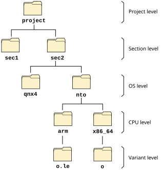

Here's a sample directory tree for a product that can be
built for two different operating systems (QNX 4 and nto
,
which represents a newer QNX OS version),
on two CPU platforms (x86_64 and ARM):

We'll talk about the names of the directory levels shortly. At each directory level is a Makefile file that the make utility uses to determine what to do in order to make the final executable.
include recurse.mk
Why do we have makefiles at every level? Because make can recurse into the bottommost directory level (the variant level in the diagram). That's where the actual work of building the product occurs. This means that you could type make at the topmost directory, and it would go into all the subdirectories and compile everything. Or you could type make from a particular point in the tree, and it would compile only what's needed from that point down.
We'll discuss how to cause make to
compile only certain parts of the source tree, even if
invoked from the top of the tree, in the
Performing partial builds
section.
If you look at the source tree that we ship,
you'll notice that we follow
the directory structure defined above, but with a few
shortcuts. We'll cover those shortcuts in the
Advanced Topics
section.